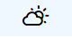
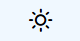
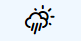
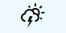
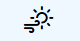
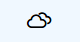

Atividade Tabelas
Dia
Tempo
Mínima
Máxima
Domingo

27°
32°
Segunda

27°
32°
Terça

27°
32°
Quarta

27°
32°
Quinta

27°
32°
Sexta

27°
32°
Sábado
27°
32°
país
saneamento básico (%)
taxa de mortalidade
infantil (por mil)
esgotamento
sanitário
adequado
abastecimento
de água
anos de permanência
das mães nas escolas
até 3
de
4 a 7
8 ou
mais
I
33
47
45,1
29,6
21,4
II
36
65
70,3
41,2
28,0
III
81
88
34,8
27,4
17,7
IV
62
79
33,9
22,5
16,4
V
40
73
37,9
25,1
19,3